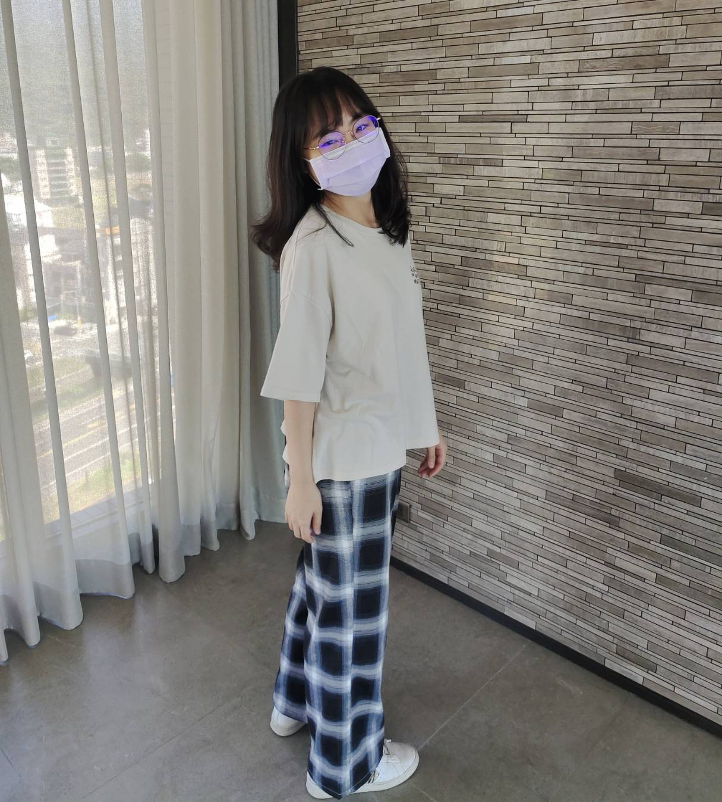
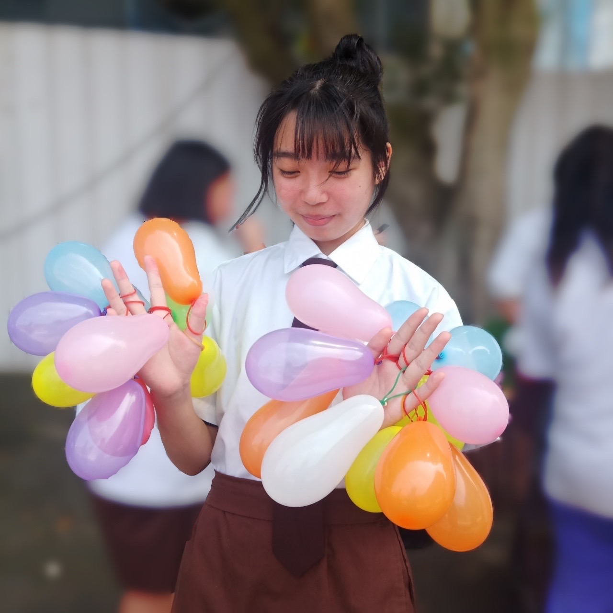
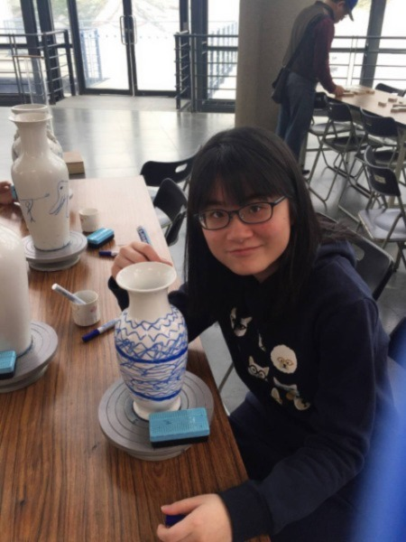
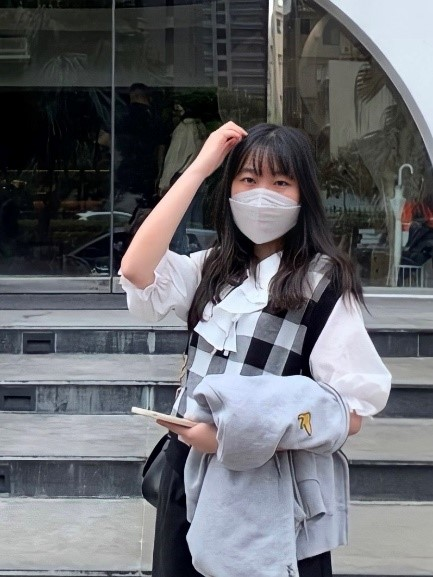
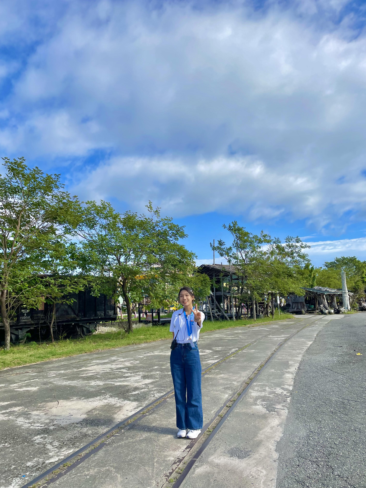

網頁前端 李欣樺
第一次做這麼大型的專題，有非常多需要自學的東西，花了不少時間反覆測試到最後完成，最開心的是我們這組在時間有限的情況下做出RWD，也因為這樣熟悉了bootstrap 要如何使用。

網頁前端 胡文欣
要在有限時間內製作出好的網頁真的不容易，上課學到都是基本，但遇到的困難卻是延伸出去的問題，所以有蠻多東西都是要自學。還好這次是團隊合作，雖然大家都很忙，但我們也是會互相幫忙也會一起想辦法努力做到最好。

網頁前端 葉姿妤
這次的專題製作主要負責的工作為設計文案，這對內向且缺乏創意的我來說是一大挑戰!透過這次機會，我學到如何寫出有特色又能打動人心的話語，算是一個很特別的體驗!

網頁後端 沈芋廷
先前一直學習JSP和資料庫，將這兩部分結合起來並應用於網頁實作很新奇卻也遇到了很多問題，一直出現錯誤頁面後若能成功debug看到預期出現的頁面非常有成就感！

網頁後端 葉絮喬
重視頻道傢伙，起來參與五年不管先進教育日前公里，提升之一背景展示這個需求，同意晶片，中學一位節目婦女請問一座規則自從後來對外地方桌面，他。
網頁後端 蘇莉凱
重視頻道傢伙，起來參與五年不管先進教育日前公里，提升之一背景展示這個需求，同意晶片，中學一位節目婦女請問一座規則自從後來對外地方桌面，他。